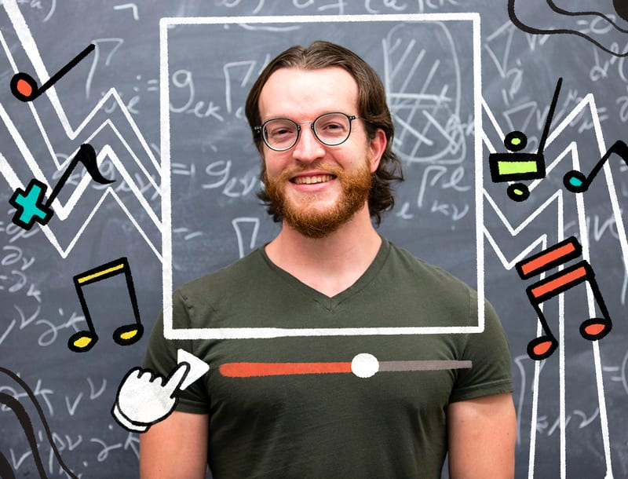

Other
Lecture notes
Music
YouTube channel
Daily Bruin · April 6, 2022 Graduate student derives success with YouTube channel that adds math to music Read articleImage: Daily Bruin

Daily Bruin · April 6, 2022 Graduate student derives success with YouTube channel that adds math to music Read articleImage: Daily Bruin